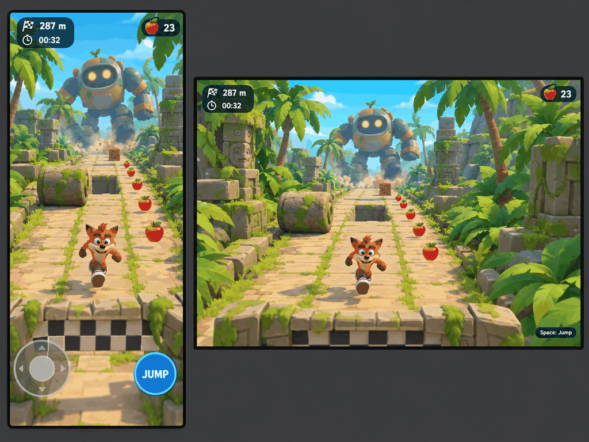
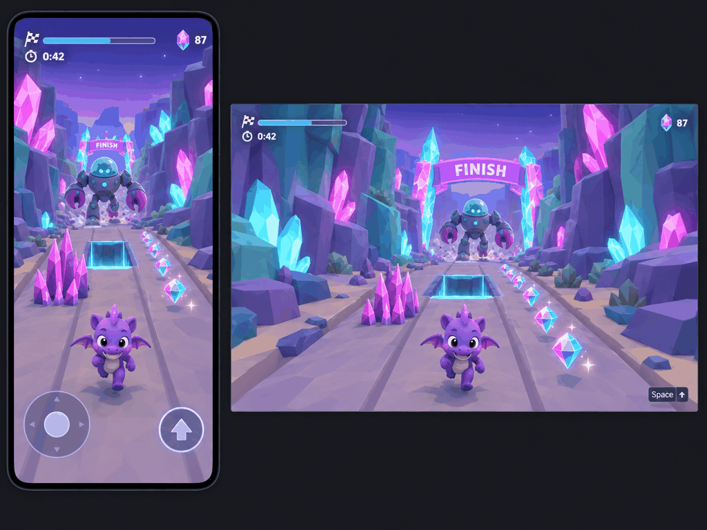
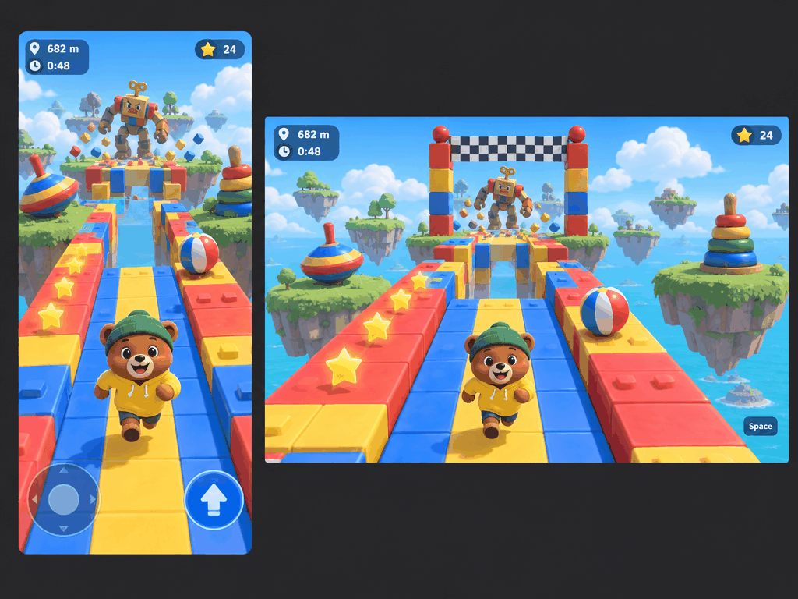
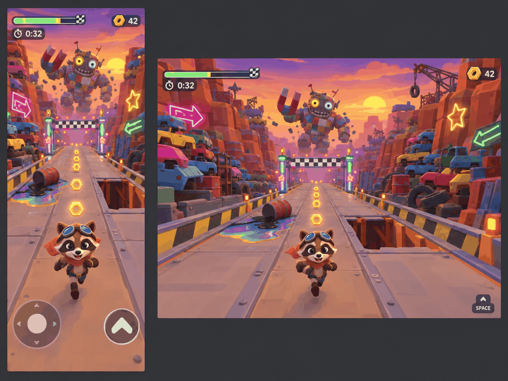
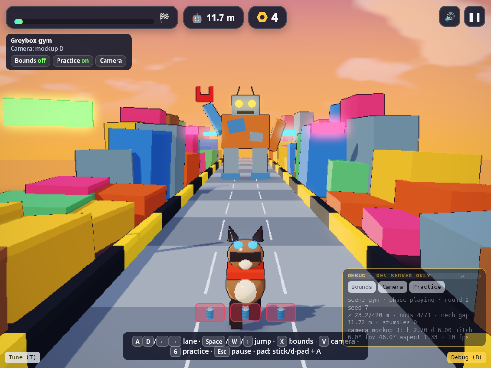

Before a single 3D asset existed, Grok Bot generated four fake "gameplay screenshots" of the same moment in four different settings. Chong-U picked one. That one image then set the camera, palette, hero, hazards and collectibles for everything after.
How it was set up
Chong-U (owner prompt) · Nov 3, 3:56 PM
How r u getting the api keys or how r u generating the mock ups)
Chong-U (owner prompt) · card answer
Use my fal.ai key (I'll provide it)
Chong-U (owner prompt) · card answer to: OK to spend ~$0.20–$0.30 on 4 fal mockups?
Yes — generate the 4 mockups
The rule in docs/direction/review-1.md: only the setting varies. Camera, gameplay moment, HUD layout and hero size stay the same, so the four images compare like for like. Each image is one composite: a portrait phone frame and a widescreen desktop frame of the same scene.
Setting
Value
Model
GPT Image 2.5 Flare on fal (gpt-image-2.5-flare-t2i), quality high, 1024×768
Count
4, one prompt each, saved beside the image (share/media/review-1/prompt-X.txt)
gore, horror, sexual content, courier/delivery themes
Total spend
about $0.154 (4 billed images, reconciled from fal billable units)
The four options

A · Tropical jungle ruins. Clearest chase, but the hero read as a Crash lookalike · share/media/review-1/A.png

B · Crystal canyon. Best palette; purple hero on purple rock · share/media/review-1/B.png

C · Toybox islands. Grok Bot's own pick: most readable lanes, cheapest to build · share/media/review-1/C.png

D · Scrapyard neon. Owner pick: most personality, best story link · share/media/review-1/D.png
One detail worth teaching: the first prompt for C was rejected by fal's content checker (probably because the hero read as Mario). It cost nothing, and the rewrite went through. Keeping heroes original was a rule from then on.
The pick, and why it wasn't the bot's pick
Chong-U (owner prompt) · card answer, Nov 3
D — Scrapyard neon
Grok Bot recommended C on build cost and readability. Chong-U chose D for personality and story: you're running through the mech's own backyard. The bot didn't argue. It wrote D's risks down as rules for kickoff instead:
Finish belongs ahead of the player; HUD progress bar carries the goal
IP lookalike risk (A, B)
Keep the hero original
The D prompt (verbatim)
fal prompt · share/media/review-1/prompt-D.txt
Two side-by-side screenshots captured from a cartoony 3D endless-style runner game, both showing exactly the same gameplay moment: on the left a portrait smartphone screen, on the right a 16:9 widescreen desktop screen, sitting on a simple dark grey background. They should read as live gameplay with a HUD, not cover art.
Setting: a friendly scrapyard canyon — the chasing mech's backyard. Rusty orange canyon walls stacked with colourful junk, stacked old cars painted in candy colours, cartoon neon signs glowing pink, green and yellow (simple shapes like arrows and stars, no readable words), a sunset sky with warm orange and purple tones. Still cartoony and upbeat, not grim.
Camera: the camera is in front of the player looking back at them, an oncoming runner view; the player sprints toward the viewer while scrap piles and signs whoosh past. The player is a small spunky cartoon raccoon with goggles and a scarf, clearly readable in the lower-middle of the frame, mid-run in the middle of three lanes.
Behind the player, far in the deep background down the canyon, an enormous goofy patchwork mech built from junk with mismatched eyes and a giant magnet arm lumbers after the player, scrap bouncing off it. The mech is chasing the player from behind; the player is fleeing, not attacking.
Mid-ground: an oil-slick puddle hazard with a toppled barrel in one lane, and a broken gap in the metal walkway to jump. Collectibles: glowing round bolts/nuts pickups floating in a row. Finish: a neon-lit finish gate with a checkered banner near the foreground end of the track.
HUD: small and clean — top-left progress bar to the finish and a timer, top-right bolt icon with count. Phone screen only: a see-through virtual joystick at bottom left and a single jump button at bottom right. Desktop screen: absolutely no touch controls, just a tiny keyboard jump hint.
Rendering style: low-poly 3D, flat colour with toon shading, chunky simplified junk shapes and bold silhouettes that simple Blender low-poly assets could match. Keep the scene uncluttered with clear lanes. Whimsical, comedic, family-friendly; no gore, no horror, no weapons firing, no delivery or courier themes.
How the mockup framed the build
Mockup D · share/media/review-1/D.png

Greybox gym, camera matched to D by eye · share/media/kickoff/desk-4x3.png
The gym camera was tuned by eye against D: on desktop the feet sit about 90% down the frame and the horizon 38–42% from the top. Then playtesting showed the cost of copying a pretty frame: with D's camera you see only about 1.1 m of track ahead. Chong-U said there was "not enough 'heads up'", so the default became a heads-up camera showing about 5.6 m ahead, with "mockup D" kept as a preset (V key).
D's crop was also the identity reference for the junk mech turnaround later (see Tripo + animation).
Takeaways
Vary one thing. Same camera, moment and HUD across options makes the pick about the world, not the framing.
Ask for screenshots, not cover art: the prompt asks for a phone frame, a desktop frame and a live HUD.
Write the losing points of the winner down as rules. D's risks became the kickoff checklist.
A mockup is mood, not measurement. "Do not read world size from them." The gym sizes the course in metres.